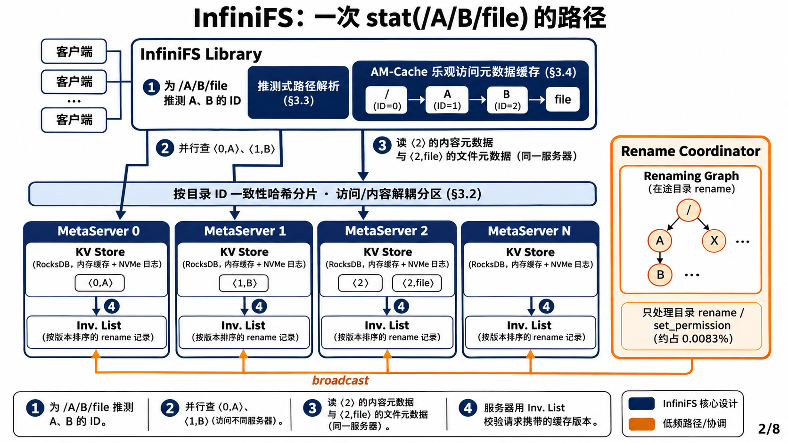
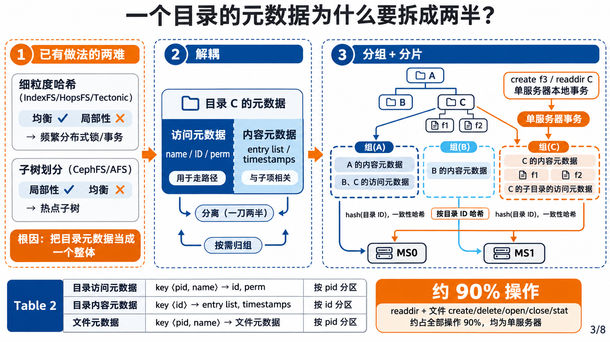
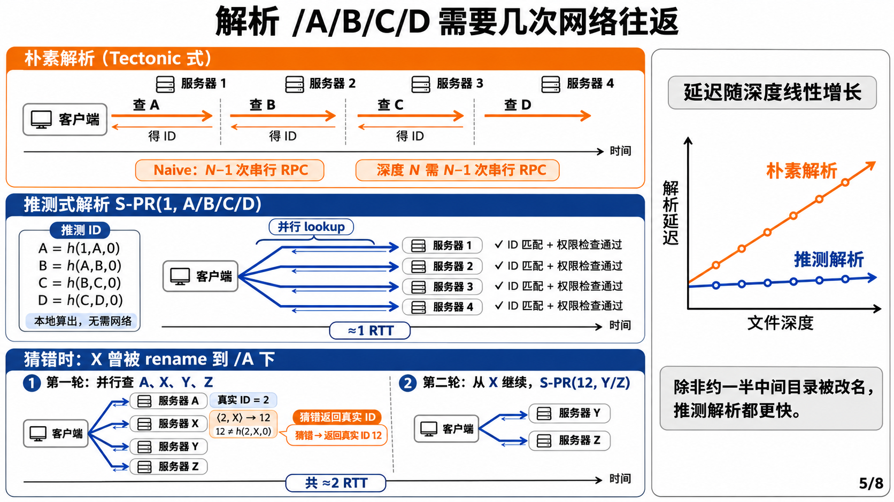
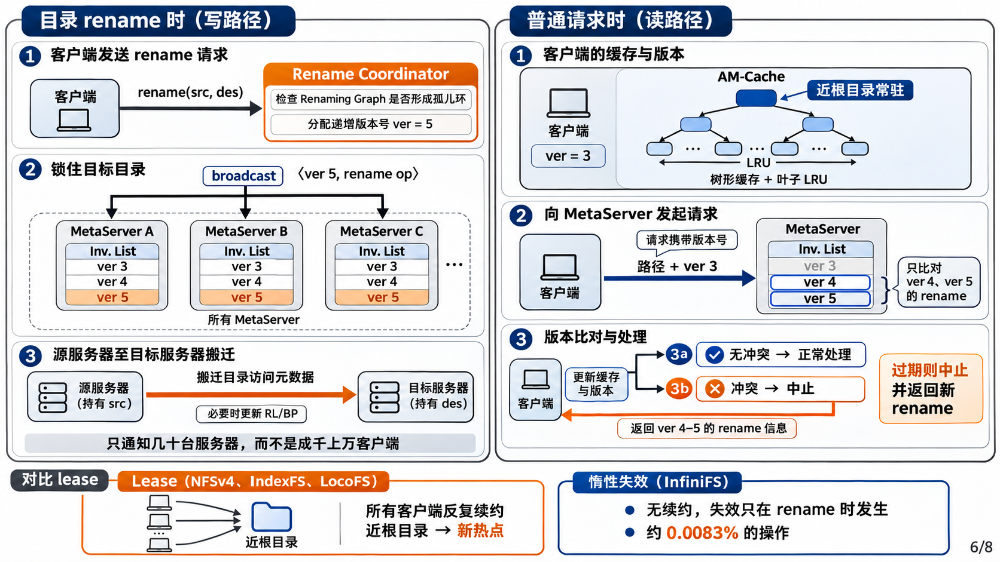
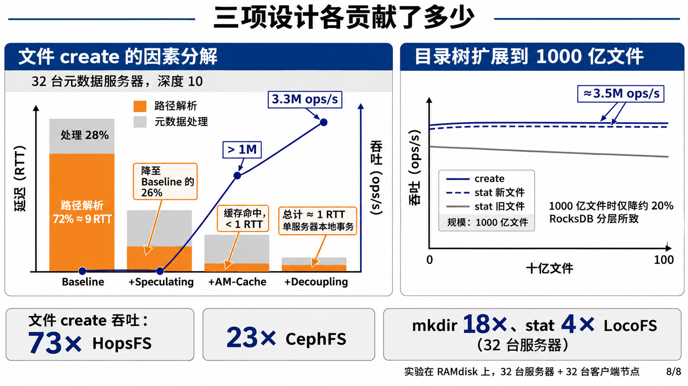

当一个数据中心只用一个文件系统、目录树里装着上百亿甚至千亿个文件时，瓶颈不在硬盘，而在"元数据"：找到文件在哪、有没有权限。InfiniFS 用三招解决：把目录的元数据切成"门牌"和"屋内"两半分开存放；让客户端自己算出每一级目录的 ID，一次并行问完整条路径；在客户端缓存"门牌"，改名时只通知服务器、不通知客户端。结果是文件创建吞吐达到 HopsFS 的 73 倍、CephFS 的 23 倍，目录树涨到 1000 亿个文件时吞吐依然稳定在约 350 万次每秒。
假设你是阿里云上一个数据处理任务，要打开这样一个文件：/warehouse/ads/2022/03/10/region/cn-hz/shard-07/part/v2/tmp/part-0001。它在目录树里排第 12 层。
你有没有想过，打开它之前，文件系统要做多少事？答案是：它得从根目录 / 开始，一层层往下问"下一级叫什么、ID 是多少、你有没有权限"。如果每一级目录都放在不同的服务器上，那就是 11 次串行的网络往返，前一次没回来，后一次没法发。
这不是假想。论文统计了阿里云盘古文件系统的真实访问记录，结论让人吃惊：
"almost half of the accessed files have a depth of more than 10."
（几乎一半被访问的文件，深度都超过 10。）—— §2.2
过去的文件系统默认"大多数文件深度不到 10"。可一旦把整个数据中心的业务都塞进同一棵目录树，路径就越长越深。路径解析的延迟随深度线性增长（论文 Figure 1b），深度到二十多层时已经是毫秒级，而这只是"找到文件"，还没开始干活。
先说背景。像 Facebook 的 Tectonic、阿里的盘古，都在走"一个数据中心一个文件系统"的路线：数据全局共享，资源不被困在小集群里，运维也只管一套系统。代价是元数据规模暴涨。论文提到，一个 HDFS 集群受单台元数据服务器限制最多约 1 亿文件，而一个数据中心动辄几十亿、上百亿文件。
元数据必须拆到很多台服务器上，于是第一道坎出现了：怎么拆。按子树拆（CephFS 的思路），同一目录下的东西都在一台机器上，创建文件很快，可一旦某个子树变热，那台机器就被压垮。按目录逐个哈希（IndexFS、HopsFS、Tectonic 的思路），负载很均匀，可创建一个文件要同时改"文件本身"和"父目录的文件列表、修改时间"，它们往往不在同一台机器上，于是要跨机器加锁、做分布式事务，又慢又贵。
第二道坎就是开头说的深路径：按目录哈希之后，每一级目录在哪台机器上要等上一级解析完才知道，只能一级级串行地问。
第三道坎是近根热点。不管你最终要找哪个文件，路径都从根出发，/、/warehouse 这几个目录会被每个请求都读一遍。就算负载在其他目录上分得再均匀，存着根附近目录的那台服务器也会被所有客户端挤爆。常见的办法是在客户端缓存目录信息，配一个租约（lease）定期过期。可成千上万个客户端都要不停地给同几个近根目录"续约"，续约本身又成了新的热点。
你可以把它想象成一个超大小区：所有人进门都要先过小区大门（近根热点），再一栋楼一栋楼地问路（深路径），而物业还在纠结是按楼栋分片管理还是按单元分片管理（分区两难）。
论文对第一道坎的诊断只有一句话：
"the root cause is that they treat the directory metadata as a whole."
（根本原因在于，已有方法把目录元数据当成一个整体。）—— §3.2
一个目录的元数据其实有两种完全不同的用途。名字、ID、权限，是别人"走到这里"时要看的，就像挂在楼道里的门牌；文件列表、修改时间，是"屋里有什么"，只和住在里面的孩子们有关。论文分别叫它们访问元数据（access metadata）和内容元数据（content metadata）。只要把这两半分开放，前面的两难就有了第三条路，后面两道坎也都能借着这个拆分来解决。

flowchart LR
C["Client library
speculative path resolution
access metadata cache"] -->|parallel lookups| MS["Metadata servers
hash by directory ID
RocksDB + invalidation list"]
C -->|dir rename only| RC["Rename coordinator
renaming graph"]
RC -->|broadcast with version| MS
拆开之后怎么放？InfiniFS 的规则是：一个目录的"门牌"（访问元数据）放在它父目录那组里；它的"屋内"（内容元数据）和它下面的文件、子目录的门牌放在一起。于是每个目录自然形成一个小组："我的屋内 + 我所有孩子的门牌 + 我所有文件"。然后按目录 ID 哈希，把这些小组分散到各台服务器上（论文 Figure 3）。
这样做的妙处在于：在目录 C 下创建文件 f3，要动的三样东西（新文件、C 的文件列表、C 的修改时间）全在 C 那一组里，一台服务器的本地事务就能搞定；readdir C 也只碰这一台机器。论文按阿里云负载统计（Table 1），这类单服务器操作约占全部操作的 90%。而组和组之间按哈希打散，热点不会扎堆在一棵子树上。

深路径慢，是因为下一级目录的 ID 只有问了上一级才知道。如果 ID 能直接算出来呢？InfiniFS 的做法是：
"assign a predictable ID to each directory, so that clients can speculate on the IDs of all intermediate directories, then send lookups for multi-component paths in parallel."
（给每个目录分配一个可预测的 ID，让客户端推测出所有中间目录的 ID，然后并行发出整条路径的查找请求。）—— §1
具体来说，目录 ID 是它"出生三元组"的哈希：
$$\mathrm{ID} = h(\text{出生父目录 ID},\ \text{目录名},\ \text{版本号})$$这像身份证号：由出生地编码、出生日期和顺序码算出来，你搬家了，身份证号也不变。目录 rename（"搬家"）时，InfiniFS 只改它门牌的位置，ID 不动，它下面成千上万的子孙元数据一个都不用搬。
那改名之后原地再建一个同名目录怎么办？两个目录的出生三元组会一样。InfiniFS 加了一个版本号：第一次改名时，在出生父目录里记一张"重命名列表"（RL），在被改名的目录里记一个"回指针"（BP），之后原地新建的同名目录版本号就变成 1，ID 也就不同了（Figure 4）。这就像同一家医院同一天出生的同名孩子，靠顺序码区分。

有了可计算的 ID，解析路径就变成了：客户端先假设沿途目录都没改过名（版本号取 0），本地算出每一级的 ID，然后同时向所有相关服务器发查询。每台服务器核对 ID 和权限，全对的话整条路径大约 1 个网络往返就解析完。猜错了也不要紧：服务器用正确的键找到那个目录，把真实 ID 返回来，客户端从那一级继续再并行一轮，大约 2 个往返。
回到开头那个 12 层的文件：原来要 11 次串行往返，现在通常 1 次就够。好比寄快递，以前要一站一站地问"下一站是哪里"，现在你拿着邮编直接算出了每一站的位置，一口气把单子全派出去。
剩下近根热点。InfiniFS 在客户端缓存目录的门牌（只缓存访问元数据），组织成一棵树，叶子挂在 LRU 链上淘汰，所以根附近的目录总是留在缓存里，几乎不用再去问服务器。
关键是一致性怎么保证。论文的态度很"乐观"：
"INFINIFS clients are agnostic about the staleness and optimistically utilize local cache entries during path resolution."
（InfiniFS 客户端不关心缓存是否过期，在路径解析中乐观地使用本地缓存。）—— §3.4
缓存会因为什么而过期？只有目录 rename 和目录改权限。这两种操作有多罕见？
"Directory rename and directory set_permission operations rarely occur, accounting for only ∼ 0.0083% of all metadata operations."
（目录 rename 和目录 set_permission 极少发生，只占全部元数据操作的约 0.0083%。）—— §2.3
0.0083% 是什么概念？大约每 1.2 万次元数据操作才有一次。所以 InfiniFS 让这种罕见操作多花点力气：先经过一个中心的 rename 协调器拿一个递增的版本号，再把"谁改成了什么"广播给所有元数据服务器，存进各自的失效列表。注意，广播对象是几十台服务器，不是成千上万个客户端。
客户端发请求时带上自己的缓存版本号。服务器只需把请求的路径和"比这个版本更新的那几条 rename"比一比：没冲突就照常处理；有冲突就拒绝，并把新的 rename 记录发回去，客户端更新缓存后重试（Figure 7）。这就像小区搬家不挨家挨户通知，只通知每栋楼的门卫；你来办事时，门卫翻一下最近的搬家名单就知道你手里的地址还对不对。

中心协调器还顺手解决了一个隐蔽的 bug：两个看似无关的并发 rename（把 E 挪到 C 下、同时把 B 挪到 F 下）可能拼出一个与根断开的环，环里的文件谁也访问不到（Figure 8）。协调器记着所有在途的 rename，新 rename 执行前先查会不会成环。
| 问题 | 已有做法 | InfiniFS |
|---|---|---|
| 分区 | 子树划分：局部性好、易热点；逐目录哈希：均衡好、创建要跨机事务 | 访问/内容解耦后按目录成组哈希：约 90% 操作单机完成，负载仍均衡 |
| 路径解析 | 深度 N 需 N−1 次串行 RPC | 本地算出全部中间 ID，并行查找，通常约 1 RTT |
| 近根热点 | 客户端缓存 + lease，所有客户端反复续约近根目录 | 只缓存访问元数据；rename 广播给服务器，服务器按版本惰性校验 |
| 目录 rename | 需改写所有子孙元数据（全路径索引类系统） | 只改门牌位置，ID 不变；走中心协调器，防孤儿环 |
最能说明问题的是论文的"因素分析"（Figure 11）：在 32 台元数据服务器、深度 10 的目录树上，从一个按目录哈希的基线系统开始，一招一招往上加，看文件创建变成什么样。
| 配置 | 路径解析 | 元数据处理 | 吞吐 |
|---|---|---|---|
| Baseline（类似 IndexFS / HopsFS / Tectonic） | 占 72%，约 9 RTT | 占 28%，约 3 RTT | 很低，被近根热点卡住 |
| + 推测式解析 | 降到 Baseline 的 26% | 不变 | 几乎不变 |
| + 访问元数据缓存 | 缓存命中时低于 1 RTT | 不变 | 超过 100 万次/秒 |
| + 解耦分区 | 总计约 1 RTT（文件创建变成单机本地事务） | 330 万次/秒 | |
这张表有个耐人寻味的细节：只加推测式解析，延迟降了一大截，吞吐却几乎没动。原因是近根热点还在，所有请求照样挤在根目录那台机器上；加上缓存把这个口子堵住，吞吐才一下子冲过 100 万。三招不是各自独立的优化，而是一环扣一环：缺了哪一环，前面的收益都发挥不出来。

和别的系统比（Figure 9，32 台服务器）：InfiniFS 的文件创建吞吐是 HopsFS 的 73 倍、CephFS 的 23 倍；目录创建是 LocoFS 的 18 倍，文件 stat 是它的 4 倍。LocoFS 把所有目录元数据放在一台服务器上，单机时创建文件反而比 InfiniFS 略快（20 万对 18 万次/秒），但服务器一多，那台目录服务器就成了天花板。
规模实验（Figure 12）更直观：每次往目录树里插 10 亿个文件，一直插到 1000 亿。1000 亿是什么概念？地球上每个人分到十几个文件。在这个规模下，创建文件和读新文件的元数据都稳定在约 350 万次每秒；读最早那批老文件慢了约 20%，原因是 RocksDB 把老数据压到了更深的层级。
技术上，InfiniFS 示范了一种很实用的思考方式：遇到"两个目标不可兼得"时，先看看被争夺的那个对象能不能拆开。局部性和负载均衡之所以打架，是因为目录元数据被当成一块；拆成两块，各归各位，冲突就消失了大半。
产业上，这篇论文的负载数据来自阿里云盘古，作者中也有阿里的工程师，设计直接对着"一个数据中心一个文件系统"的真实痛点。本仓库的盘古 2.0 精读也提到了相近的并行路径解析思路。可预测 ID、并行解析、惰性失效后来也成了 SwitchFS、MesaFS、HMFS 等工作的对照基线或沿用方案。
方法上，最值得学的是"用负载统计决定把复杂度放在哪"。论文先量出目录 rename 只占约 0.0083%，于是放心地把它交给一台中心协调器，换来所有常见操作的简单和快速。这是一笔明码标价的交易，而不是凭直觉的取舍。
作者自己承认了几处。目录 rename 必须经过中心协调器做成环检测和广播，吞吐停在约 1 万次每秒，加服务器也不涨（Figure 14）；mkdir 要跨两台服务器做两阶段提交，延迟比把所有目录放一台机器的 LocoFS 高（Figure 10）。路径上被改过名的目录越多，推测猜错的次数越多，只有当大约一半的中间目录都被改过名时，推测式解析才会比朴素解析慢（Figure 15）。
笔者再补几点。第一，实验全部跑在 RAMdisk 上，用 mdtest 创建零长度文件，没有回放真实负载，Tectonic 因闭源没比，IndexFS 因服务器崩溃没有吞吐数据，结论的外推需要谨慎。第二，按目录成组意味着一个目录的全部孩子都在同一台机器上：如果某个目录下有几千万个文件且被高并发写入，这台机器仍会成为热点，论文没有讨论超大单目录的情况。第三，0.0083% 来自阿里云的三类业务，换成频繁改名的场景（比如某些"写临时目录再改名提交"的分析框架），中心协调器可能成为瓶颈，它的可用性设计论文也只讲了崩溃后重发广播。
现在再打开 /warehouse/.../part-0001：根附近的几级门牌就在你本地缓存里，剩下几级的 ID 你自己算得出来，一次并行查询发出去，服务器顺手核对一下最近有没有人搬过家；找到文件后，读它的元数据只需要一台机器。原来要问 11 次的路，现在大多数时候一次问完。成千上万个客户端同时这样做，根目录那台服务器也不再拥堵。